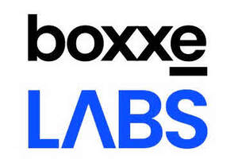

Trade Mark Journal No.2025/047 21 November 2025
UK00004290929 7 November 2025 (9,35,37,42)

- Class 9
- Computer software and hardware in the field of information technology systems and management; business technology software; application software for cloud computing services; security software; artificial intelligence software; artificial intelligence software for analysis; artificial intelligence and machine learning software; computer network hubs; digital solutions provider software; software that provides access to remote workspaces; Internet of Things [IoT] gateways, sensors, detectors enabled devices and/or computer hardware for use in relation thereto; data and file management and database software; providing an e-commerce platform, namely, an online platform for the electronic sale of computer hardware, software, and accessories.
- Class 35
- Advertising for the sale of computer hardware and accessories; assistance with procurement of goods and services for others; business consultancy relating to the administration of information technology; outsourcing services in the field of business analytics; data processing, systematisation and management; business data analysis; information and data compiling and analysing relating to business management; statistical analysis and reports for business purposes; preparation of reports for business purposes; arranging subscriptions to software and/or IT services; consultancy, advisory and information in relation to all of the aforesaid services.
- Class 37
- Installation, maintenance and repair of computer network and information technology equipment; maintenance and repair of security systems; information services relating to installation and maintenance of security systems; consultancy, advisory and information in relation to all of the aforesaid services.
- Class 42
- IT services; IT project management; IT security, protection and restoration; IT service management; private cloud hosting provider services; public cloud hosting provider services; consultancy in the field of office and workplace automation; cloud storage services for electronic files; cloud storage services for electronic data; data security consultancy; provision of security risk management programs; data security services [firewalls]; provision of security services for computer networks, computer access and computerised transactions; providing artificial intelligence computer programs on data networks; Software as a Service [SaaS]; Software as a Service [SaaS] featuring computer software platforms for artificial intelligence; Platform as a Service [PaaS]; development of computer software application solutions; programming of software for database management; providing providing online non-downloadable software for database management; information technology infrastructure and architecture; computer services for the analysis of technical data; provision of non-downloadable software that provides access to remote workspaces; consultancy, advisory and information in relation to all of the aforesaid services.
BOXXE GROUP LIMITED